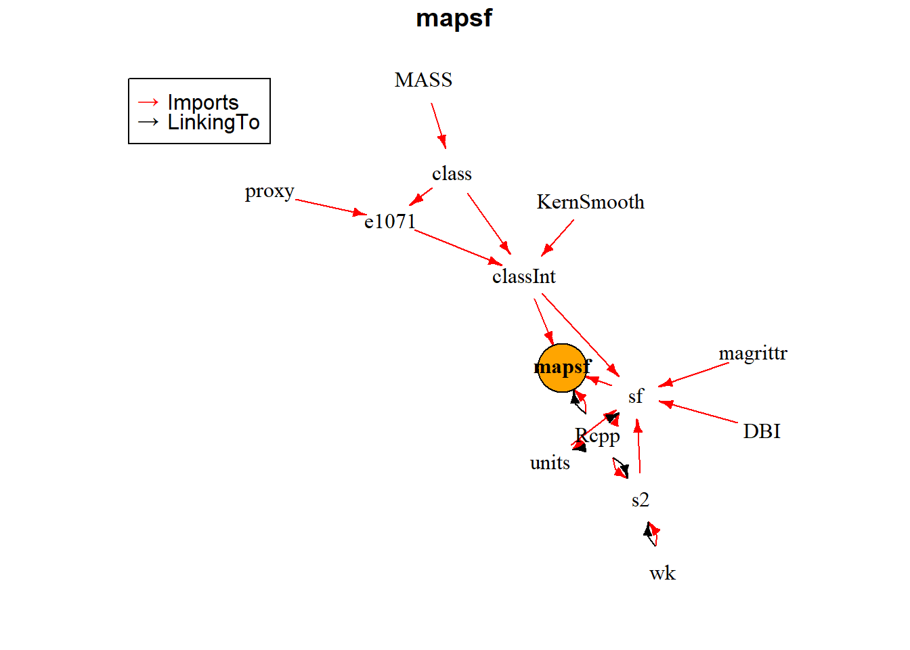

install.packages("miniCRAN")Le package miniCRAN
Créer son CRAN personnel en local
Le package miniCRAN permet de créer un dépôt en interne composé de packages sélectionnés dans des dépôts de type CRAN. Cela permet de récupérer les sources binaires de packages ciblés, et de les rendre disponibles où l’on souhaite (sur sa machine, sur clef USB, sur son propre serveur…).
miniCRAN peut par exemple être utilisé pour créer son CRAN personnel sur une clef USB, qui vous permettra d’installer ces packages sur n’importe quelle machine sans avoir besoin d’être connecté à internet.
Commencez par installer le package miniCRAN :
miniCRAN ne récupère pas uniquement le code source d’un package ciblé mais également toutes ses dépendances (autres packages) indispensables à son fonctionnement.
Lister les dépendances
la fonction pkgDep()permet de connaitre la liste de toutes les dépendances d’un package. Exemple :
library("miniCRAN")
pkgDep("mapsf", suggests = FALSE, enhances = FALSE) [1] "mapsf" "classInt" "Rcpp" "sf" "e1071"
[6] "class" "KernSmooth" "DBI" "magrittr" "s2"
[11] "units" "MASS" "proxy" "wk" Vous pouvez visualiser ces dépendances sous forme de graphe à l’aide de la fonction makeDepGraph() :
# Construction d'un objet igraph (graphe) formalisant les dépendances d'un package
graph_dep <- makeDepGraph( "mapsf", suggests = FALSE, enhances = FALSE)
# Affichage du graphe
plot(graph_dep , legendPosition = c(-1, 1), vertex.size = 20)
Créer son miniCRAN
Avant d’importer les sources des packages ciblés ainsi que leurs dépendances, créez un nouveau répertoire qui permettra de les stocker. Vous pouvez le faire manuellement ou en code R avec la fonction dir.create() :
path_miniCRAN <- "/home/hugues/Documents/5.Cours/Modules_R/miniCRAN"
# Création du répertoire nommé "miniCRAN"
dir.create(path = path_miniCRAN)Il ne vous reste plus qu’à remplir votre répertoire avec les sources des packages ciblés. Pour cela, utilisez la fonction makeRepo() :
# Création d'un vecteur avec le ou les package(s) ciblé(s)
mes_pkgs <- c("readxl", "openxlsx", "haven",
"dplyr", "lubridate", "stringr",
"ggplot2", "FactoMineR", "sf",
"terra", "mapsf", "rmarkdown", "knitr")
# Téléchargement des sources des packages (+ dépendances) dans le répertoire "miniCRAN"
makeRepo(pkgDep(mes_pkgs), path = path_miniCRAN, type = c("source", "mac.binary", "win.binary"))Ajouter des packages
Il est très simple de rajouter de nouveaux packages (et leur dépendances) dans votre miniCRAN en utilisant la fonction addPackage() :
addPackage("tidyr", path = path_miniCRAN, type = c("source", "mac.binary", "win.binary"))Pour lister l’ensemble des packages stockés sur votre miniCRAN, utilisez la fonction pkgAvail() :
# Check for available packages
pkgAvail(repos = path_miniCRAN, )[, c(1:3, 5)]Installer un package du miniCRAN
Pour installer un package stocké sur votre miniCRAN local, utilisez la fonction install.packages()de la manière suivante :
# Chemin d'accès jusqu'au "miniCRAN" stocké sur votre machine.
url_miniCRAN <- paste0("file:///", "C:/Users/<username>/.../miniCRAN")
# Installation de ggplot2
install.packages("ggplot2",
repos = url_miniCRAN,
type = "source")Le miniCRAN de TIG’R
Un miniCRAN comportant l’ensemble des packages utilisés dans les leçons de ce site web est mis à disposition. Vous pouvez le télécharger en vous connectant à cette page.
Pour aller plus loin
Pour connaitre l’ensemble des fonctionnalités offertes par le package miniCRAN, consultez le site web du package.